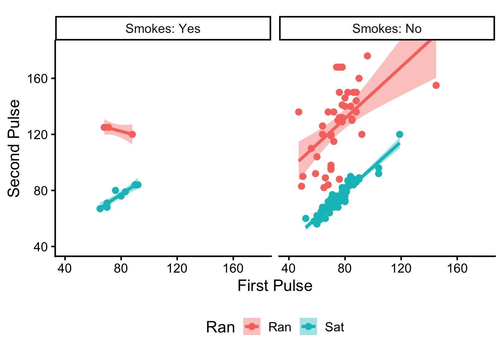

Intermediate R: tidyverse
PSYC 2020-A01 / PSYC 6022-A01 | Lab 5
Shuheng Jiang
Outline
tidyverseWorkflow- Full Analysis
Learning objectives: R: tidyverse
The tidyverse

Whole Game
Pieces of the “whole game” of data science

Figure from R for Data Science (2e)
Whole Game
Today’s plan:
- Introduce each of these principles
- Learn about
tidyversesyntax - Cover some examples of
tidyversefunctions that fall into each category - Conduct our first “full analysis” by following the tidy workflow
Whole Game
Import → Tidy → Transform → Visualize → Model → Communicate
Import
Bringing our data into R
○ We’ve done this with the
read() function family and / or the rio package
○ …Neither of those are
tidyverse packages
○ But that’s fine! This step is the simplest
Import: Today’s dataset
Dataset on pulse rates before and after exercise
Can import from the internet
Or download the .csv file from Canvas
ⓘ The original statsci.org link from past semesters has moved to the address above
Import: Today’s dataset
| Variable | Description |
|---|---|
| Height | Height (cm) |
| Weight | Weight (kg) |
| Age | Age (years) |
| Gender | Sex (1 = male, 2 = female) |
| Smokes | Regular smoker? (1 = yes, 2 = no) |
| Alcohol | Regular drinker? (1 = yes, 2 = no) |
| Exercise | Frequency of exercise (1 = high, 2 = moderate, 3 = low) |
| Ran | Whether the student ran or sat between the measurements (1 = ran, 2 = sat) |
| Pulse1 | First pulse measurement (rate per minute) |
| Pulse2 | Second pulse measurement (rate per minute) |
| Year | Year of class (93–98) |
Import: Today’s dataset
Let’s check out our data
Whole Game
Import → Tidy → Transform → Visualize → Model → Communicate
Tidy
Refers to tidy data
“Happy families are all alike; every unhappy family is unhappy in its own way.” — Leo Tolstoy
“Tidy datasets are all alike, but every messy dataset is messy in its own way.” — Hadley Wickham
Tidy data follow a consistent set of organizational principles
More work up front but much easier to work with after
Tidy
PersonId Height Weight Year
1 1 173 57 93
2 2 179 58 93
3 3 167 62 93
4 4 195 84 93
5 5 173 64 93
6 6 184 74 93 PersonId Year Variable Value
1 1 93 Height 173
2 1 93 Weight 57
3 2 93 Height 179
4 2 93 Weight 58
5 3 93 Height 167
6 3 93 Weight 62 PersonId HeightToWeight Year
1 1 173/57 93
2 2 179/58 93
3 3 167/62 93
4 4 195/84 93
5 5 173/64 93
6 6 184/74 93All of these dataframes contain the same information, but one of them is much easier to work with…
Why?
Tidy: Principles
Three rules to a tidy dataset
- Each variable is a column; each column is a variable.
- Each observation is a row; each row is an observation.
- Each value is a cell; each cell is a single value.

Tidy: Why tidy?
Consistency! Any sort of consistency in your data management will be beneficial.
What’s often the primary argument of functions we’ve used?
R loves vectors! Having variables in columns plays well with many functions
Tidy: Is our data tidy?
Height Weight Age Gender Smokes Alcohol Exercise Ran Pulse1 Pulse2 Year
1 173 57 18 2 2 1 2 2 86 88 93
2 179 58 19 2 2 1 2 1 82 150 93
3 167 62 18 2 2 1 1 1 96 176 93
4 195 84 18 1 2 1 1 2 71 73 93
5 173 64 18 2 2 1 3 2 90 88 93
6 184 74 22 1 2 1 3 1 78 141 93
7 162 57 20 2 2 1 2 2 68 72 93
8 169 55 18 2 2 1 2 2 71 77 93
9 164 56 19 2 2 1 1 2 68 68 93
10 168 60 23 1 2 1 2 1 88 150 93- Each variable is a column; each column is a variable.
- Each observation is a row; each row is an observation.
- Each value is a cell; each cell is a single value.
Tidy: For later…
We will learn ways to make untidy data tidy in later classes
For now, we are good, and can proceed with our analysis!
Whole Game
Import → Tidy → Transform → Visualize → Model → Communicate
Transform
Usually, our data doesn’t come to us with the variables exactly as we want them
Sometimes we need…
○ New variables, based on our existing data or otherwise
○ Summarized version of our dataset
○ Reordered variables
○ Etc., etc., etc. Any others?
Transform: tidyverse syntax
The tidyverse website mentioned that each package shares a common language for their functions
Based off of dplyr (one of the packages) verbs
- The first argument is always a data frame.
- The subsequent arguments typically describe which columns to operate on using the variable names (without quotes).
- The output is always a new data frame.
Transform: Load the tidyverse
Let’s get ready to actually use some tidyverse code!
── Attaching core tidyverse packages ──────────────────────── tidyverse 2.0.0 ──
✔ dplyr 1.1.4 ✔ readr 2.1.5
✔ forcats 1.0.0 ✔ stringr 1.5.1
✔ ggplot2 4.0.0 ✔ tibble 3.2.1
✔ lubridate 1.9.3 ✔ tidyr 1.3.1
✔ purrr 1.0.2
── Conflicts ────────────────────────────────────────── tidyverse_conflicts() ──
✖ dplyr::filter() masks stats::filter()
✖ dplyr::lag() masks stats::lag()Note
Note the Conflicts section! Remember when we talked about overwriting?
ⓘ In the live cells on these slides, dplyr and ggplot2 (the two tidyverse packages we use today) are already loaded for you
Transform: More tidyverse syntax
One more thing…
tidyverse verbs work best in a pipe: |>
How we’ve been using functions:
output <- function(input)
Functions in a pipe:
output <- input |> function()
Why is this helpful?
Many functions together:
anotherfunction(otherfunction(function(input)))
Functions in a pipe:
input |>
function() |>
otherfunction() |>
anotherfunction()Transform: Goals for our data
In what ways should we transform our data?
First, we need to figure out our questions!
Transform: Goals for our data
| Variable | Description |
|---|---|
| Height | Height (cm) |
| Weight | Weight (kg) |
| Age | Age (years) |
| Gender | Sex (1 = male, 2 = female) |
| Smokes | Regular smoker? (1 = yes, 2 = no) |
| Alcohol | Regular drinker? (1 = yes, 2 = no) |
| Exercise | Frequency of exercise (1 = high, 2 = moderate, 3 = low) |
| Ran | Whether the student ran or sat between the measurements (1 = ran, 2 = sat) |
| Pulse1 | First pulse measurement (rate per minute) |
| Pulse2 | Second pulse measurement (rate per minute) |
| Year | Year of class (93–98) |
Transform: Goals for our data
My questions:
- Is the difference in pulse between the first and second measurement points different for people who ran or not?
- Does that difference vary by whether or not someone is a regular smoker?
- What is the relationship between first and second pulse measurements? Does this differ by smoking status?
- Class question!! (time pending)
Transform: Gameplan
Transformation goals:
- Make a variable with the difference between the first and second pulse measurement points
- Code some of our numeric variables into their categories
- Subset our data to only include the relevant columns
- Summarize information based on our questions
Transform: Factor Variables
New data type (to us): factor variable
○ How R works with categorical data
○ Sets fixed possibilities of values that the variable can take on
If you have a variable with days of the week…
Nothing preventing typos and no sensible sorting
Transform: Factor Variables
Will convert to NA if not valid level
Better sorting
Try it:
Transform: Some relevant functions
| Function | What it does |
|---|---|
mutate() |
adds, changes, renames columns |
factor() |
converts numeric to factor data type |
select() |
selects specified columns |
filter() |
selects specified rows |
summarize() |
summarizes data |
Switching to RStudio…
Transform: Sample code
Goal 1, 2, and 3:
○ Make a variable with the difference between the first and second pulse measurement points
○ Code some of our numeric variables into their categories
○ Subset our data to only include the relevant columns
Transform: Sample code
Goal 4:
○ Summarize information based on our questions
Whole Game
Import → Tidy → Transform → Visualize → Model → Communicate
Visualize
So many numbers! Can we please visualize our data?
“The simple graph has brought more information to the data analyst’s mind than any other device.” — John Tukey
Yes! With the ggplot2 package
○ A bit of a different plotting system than we’ve done before
○ But much more expansive and flexible (and much nicer looking, if you ask me!)
Visualize: ggplot2
Let’s briefly explore a different question: what is the relationship between the pulse measurements at the two different time points?

Let’s begin at the end:
Visualize: ggplot2
Let’s briefly explore a different question: what is the relationship between the pulse measurements at the two different time points?
When we just call the ggplot() function with our data as the first argument, we get this blank area
ggplot() works by adding layers and layers onto a plot object
This is not a very exciting plot, but you can think of it like an empty canvas you’ll paint the remaining layers of your plot onto. — R4DS
Visualize: ggplot2
Let’s briefly explore a different question: what is the relationship between the pulse measurements at the two different time points?
Next, we want to tell ggplot() what information we want in our plot and where we want it
We do this with the aes() (“aesthetics”) function in the mapping = argument
How variables are mapped onto specific parts of the plot
To investigate the relationship between the first and second pulse measurements, we can choose to put Pulse1 on the x-axis and Pulse2 on the y-axis
What do we get?
Visualize: ggplot2
Let’s briefly explore a different question: what is the relationship between the pulse measurements at the two different time points?
Still no data, though
Need to define some geom, a geometric display of our data
Will usually start with geom_
geom_line() |
line graph |
geom_bar() |
bar graph |
geom_boxplot() |
boxplot |
geom_point() |
scatterplot |
Can start addressing questions here!
Note
Take note of the missing values warning!
Visualize: ggplot2
Let’s briefly explore a different question: what is the relationship between the pulse measurements at the two different time points?
These variables are conceptually similar and should probably have the same scale
Automatically generated axes are a good place to start
But good practice to consider them each time
Visualize: ggplot2
Let’s briefly explore a different question: what is the relationship between the pulse measurements at the two different time points?
Adding aesthetics and layers
Who in this group are the people who ran?
Start: do we need to modify the aesthetic or the geom?
What can we tell from this?
Visualize: ggplot2
Let’s briefly explore a different question: what is the relationship between the pulse measurements at the two different time points?
Adding aesthetics and layers
Let’s say we want to add a line to better represent the overall trend
Start: do we need to modify the aesthetic or the geom?
What can we tell from this?
Visualize: ggplot2
Let’s briefly explore a different question: what is the relationship between the pulse measurements at the two different time points?
Let’s say we want to look at this for smokers vs non-smokers
What can we tell from this?
Visualize: ggplot2
Let’s briefly explore a different question: what is the relationship between the pulse measurements at the two different time points?
Let’s say we want this plot to look nicer!!
Built in themes
Visualize: ggplot2
Let’s briefly explore a different question: what is the relationship between the pulse measurements at the two different time points?
Let’s say we want this plot to look nicer!!
Additional theming with theme(), labs(), and various arguments
Whole Game
Import → Tidy → Transform → Visualize → Model → Communicate
Model
At this point, we could take the statistical models we know and apply them to the data
○ We haven’t learned many yet, but we have learned some!
○
mean(), sd() could combine to model the distribution of your data, etc.
We will do more modeling later!
Whole Game
Import → Tidy → Transform → Visualize → Model → Communicate
Communicate
We…have already learned ways to do this with RMarkdown!
Statistics and visualizations are great, but to tell a good story it is often useful to accompany these with text explaining the key features or importance.
And we’ve been practicing this all along by describing the plots!
Communicate: Pulse Measurements

In this visualization, we can see a strong positive relationship between participants’ pulse measurements at the first time point and their pulse measurements at the second time point. We can see that the individuals who ran in between the measurements had similar values on the x-axis (the first measurement) but much higher values at the second measurement. While it seems like there may be some differences in pulse between regular smokers and non-smokers, there are far fewer observations for smokers.
Lab 5 Assignment…
- No Lab Assignment this week